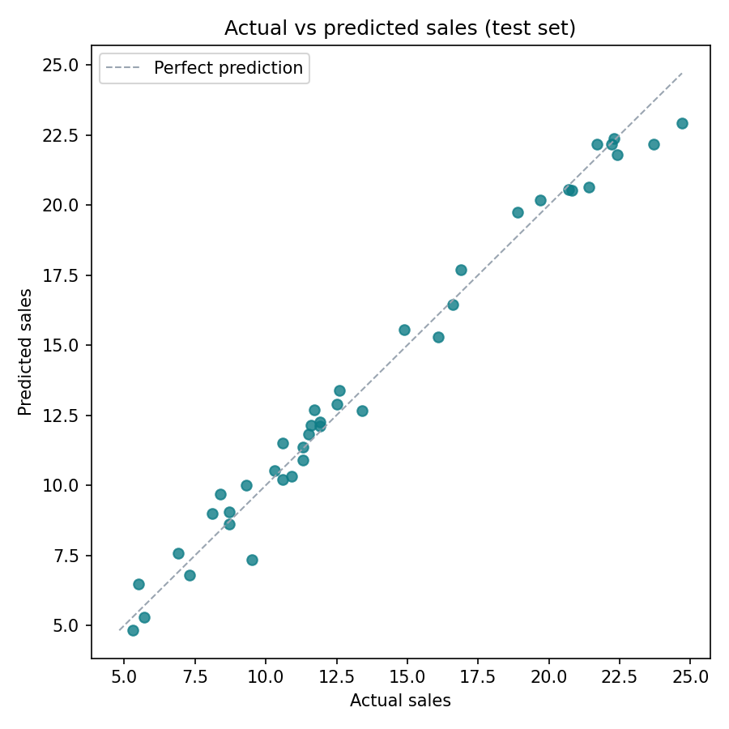

How accurate is the model on unseen data?
On the 40 markets held back for testing, the model explains 98.1% of the variation in sales. Its predictions are off by 0.62 sales units on average.
0.981R² on test markets
0.62mean absolute error
0.77root mean squared error
